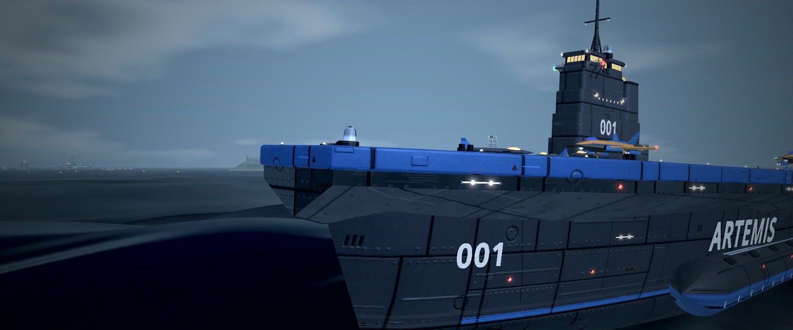
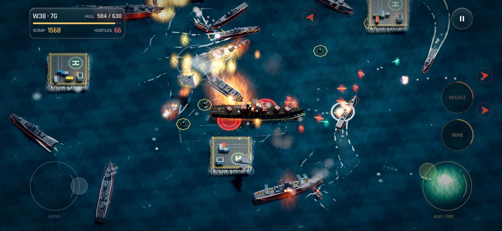
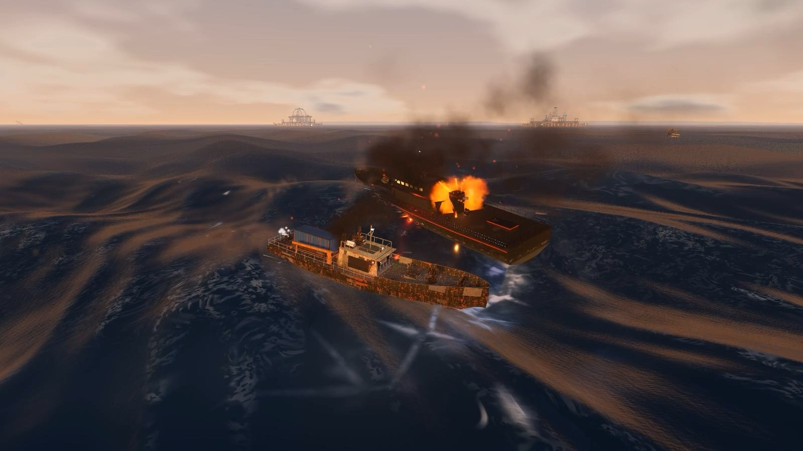
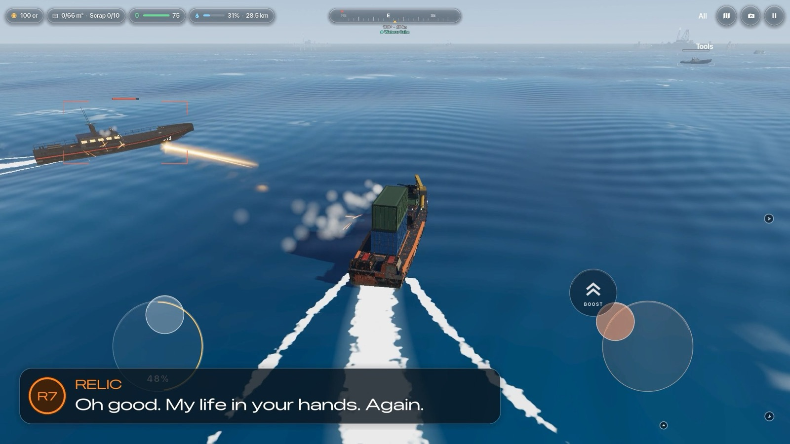
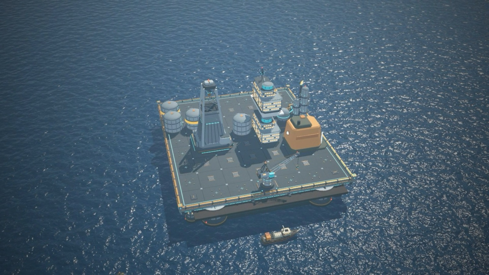
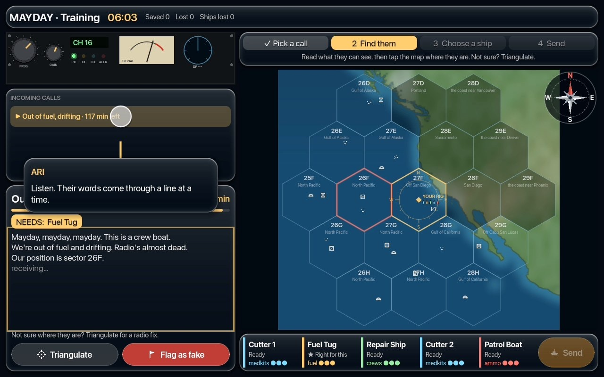

Intel · footage from the channel
Watch the fleet
Trailers and devlogs go up on YouTube as the games are built.
Seven naval games on the same drowned sea. Command the last carrier, run cargo past pirates, hold a rig, or answer the distress calls nobody else will.
Strategy, shooters, trading and rescue. Every game is a different job on the same sea.

Command the carrier ARTEMIS and the last of her battle group. Salvage wrecks, take oil rigs and build a fleet from scrap.

One ship against fifty waves of a drone fleet. Steer with your left thumb, aim and fire with your right.

One runner, one small cargo boat. Haul cargo between oil rigs and ports, salvage scrap and outrun pirates.

Shoot, trade, scavenge. Work up from a rusty old boat called the Scrapper.

Run a remote oil rig and grow it into a major trading post. Far routes pay more, and pirates can take everything.

Work the distress radio on an oil rig. Callers come in garbled, some lie, some are raiders setting a trap.
A SimCity-style port-building game, grown out of the port builder in our strategy game.
Trailers and devlogs go up on YouTube as the games are built.
Play Holdout early on iPhone or Android. The first 50 testers get the game free. Join the Discord for news, builds and devlogs.